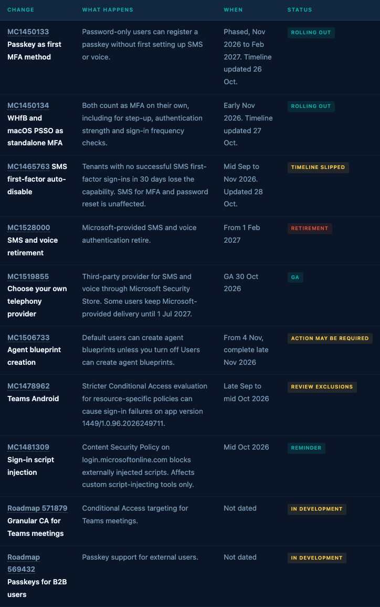
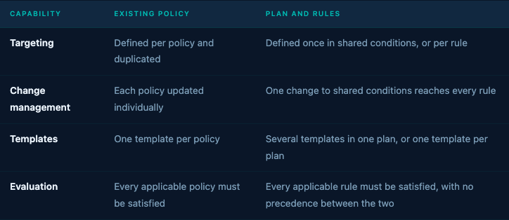
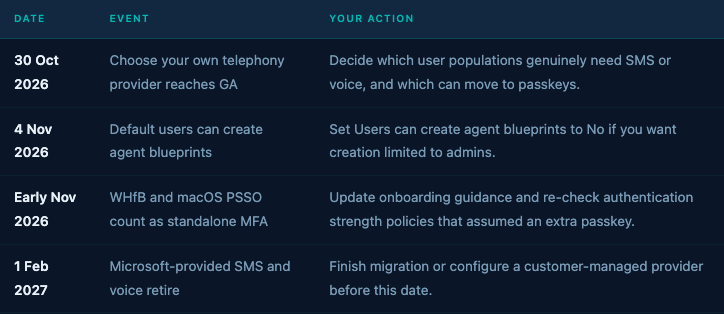

Conditional Access · October 2026
Entra now lets you define targeting and exclusions once and hang scenario rules underneath. The same month moved Security Defaults, passkey registration and the SMS retirement date.
Policy plans · Preview · Security defaults · · · Microsoft MVP · Security: Identity & Access
Originally published at conditionalaccess.tech
Section 01
Source: MC1450133 · MC1450134 · MC1465763 · MC1528000 · MC1519855 · MC1478962 · MC1481309 · MC1506733 · Roadmap 571879 · Roadmap 569432
There's been so much going on that staying on top of every change to Entra, Conditional Access and Microsoft in general feels impossible. Here are some of the items around Entra and Conditional Access you may or may not have seen already.
Items below come from the Message Center and Roadmap, 28 September to 28 October. Policy plans and Security Defaults have no item there, so those two sections come from Microsoft Learn.

⚠️ Timelines moved this month: Three of these items carried an update note in the last week saying the timeline changed. Re-check the dates in your own Message Center before you commit change windows to them.
Section 02
Source: Security defaults in Microsoft Entra ID · Microsoft-managed Conditional Access policies
Security Defaults is the free-tier baseline, and Learn now lists six enforced controls. Device code flow blocking is the newest. The page states that from 1 July 2026 every new Entra tenant blocks it as part of Security Defaults. That date is more than three months old, so treat it as established behavior, not as this month's news.
MFA
All users register for MFA, administrators do MFA at every sign-in, and everyone else is prompted when Microsoft decides it is necessary.
Protocols
Legacy authentication protocols are blocked, including Exchange ActiveSync basic authentication. Device code flow is blocked too.
Management plane
The Azure portal, Entra admin center, Azure PowerShell and Azure CLI all require MFA for every user who reaches them.
Two details matter for tenants you hand over to customers. New tenants get Security Defaults enabled at creation but with a 24-hour grace period before enforcement. And the Directory Synchronization Accounts role is excluded from the MFA requirement.
Security Defaults and Conditional Access are mutually exclusive. To move on, disable Security Defaults, then enable the Microsoft-managed Conditional Access policies that mirror it: block legacy authentication, MFA for Azure management, MFA for admins and MFA for all users. Learn says to do this immediately after disabling, because the tenant is unprotected in between.
⚠️ Docs inconsistency: The Security Defaults page lists 16 administrator roles that must do MFA. The managed-policies page describes the matching policy with 14. If you are translating Security Defaults into your own policy, compare the two lists before you rely on either.
Section 03
Source: What are Conditional Access policy plans? (preview) · Create a policy plan (preview)
Policy plans are in preview. They group related rules under shared assignments and conditions, so you define the user population and the emergency access exclusions once and write each scenario as a rule underneath. Learn names the problem directly: separate policies for Windows, macOS, iOS and Android repeat the same targeting, and a missed exclusion is a common source of lockouts.
Part 1
Name, description, tags and owners. Owners record accountability and grant no permissions. Details do not affect enforcement.
Part 2
Optional include and exclude targeting that applies to every rule: identities, resources, actions, risk, platforms, locations and client apps.
Part 3
One enforcement scenario each, with its own assignments, conditions, grant and session controls. A plan needs at least one.
Each rule is then evaluated as an independent enforcement decision in the same way as a standalone policy. Each rule appears separately in sign-in logs.
That is the part to hold on to. The plan is an authoring and change-management construct. At sign-in, a rule behaves like a policy and shows up in the logs as its own entry, so your troubleshooting workflow does not change.

⚠️ Preview limitation: During preview, plans that target users with Location as a condition get one-hour access tokens and no instant IP enforcement check. If a plan depends on named locations for security, read the continuous access evaluation limitations before you turn it on.
The video below covers the same model visually and works as a companion to the Learn pages. Where the two differ, the documentation is the reference.
Section 04
Source: Migrate policies to a policy plan (preview) · Create a policy plan (preview)
Learn's guidance for building a plan is to pick a security objective first, put only what applies to every scenario in shared conditions, and write variations as rules. The migration page gives three ways to find candidates: group by protected resource, by persona, or by shared condition.
My read on what this means for a policy set that grew organically: the flat list has no place to record intent, so every policy carries its own copy of the exclusions and its own naming. A plan gives intent a home. A "require compliant device" plan holds one exclusion list and one owner, with a rule per platform. An "agent risk" plan holds the shared risk condition, with one rule for agent users and another for autonomous agents.
Break glass
Put emergency access accounts in the plan's shared exclusions. No rule can omit them and no rule can remove them.
Ownership
Plan owners and tags give you somewhere to record who answers for a set of controls. Owners grant no edit rights, so keep your role assignments separate.
Scale
Learn calls out hundreds of network-scoped rules that share one user population and app set as a target use case.
ℹ️ Naming still matters: A plan name should state the objective, and each rule name should state what varies. Keep your existing policy naming convention on the rules so exports and sign-in log filters stay readable.
Section 05
Source: Migrate policies to a policy plan (preview) · Analyze Conditional Access policy impact
There is a built-in migration tool. On the Policies page, the Migrate to Conditional Access Policy plans banner starts it. It analyzes the policies you select, moves what they have in common into shared conditions, maps each policy to a rule and proposes the plan for review. Your original policies are not changed.
1
Select policies with a common intentEntra ID, Conditional Access, Policies, then Get started on the migration banner. Start with a small related group.
2
Review shared conditions and proposed rulesSettings the policies have in common become shared conditions. Every generated rule starts in the Off state.
3
Set rules to Report-onlyCompare rule results in sign-in logs against the original policies. Learn expects them to be equivalent.
4
Turn rules On, then turn the originals OffLearn says to disable the original policies only once you are confident the plan covers your intended posture. Delete after the validation period.
🛑 Double enforcement: Existing policies and plan rules accumulate independently, and every applicable one must be satisfied. Between step 4 and the original policies going Off, a user faces both. If you add a stricter rule than the original, the stricter one wins in practice. Plan that overlap window deliberately.
Section 06
Source: MC1506733 · MC1519855 · MC1450134 · MC1528000

Start the audit with every policy and authentication strength that accepts SMS or voice as a method, and decide what replaces it before February.
Open questions
Source: What are Conditional Access policy plans? (preview) · Migrate policies to a policy plan (preview)
The plans pages do not say whether each rule counts against the per-tenant Conditional Access policy limit. Learn's limit figures also disagree between cached and live versions, so I am not quoting a number here. If rules count individually, a plan with sixty rules is sixty policies for limit purposes, and consolidation buys you tidiness but no headroom.
I am testing policy plans now and will present my own opinion on them in a deeper dive due later in November. The scale question is first on the list, along with how rules show up in sign-in logs. If you get to a lab tenant before I publish, add rules until something stops you and send me what you find.